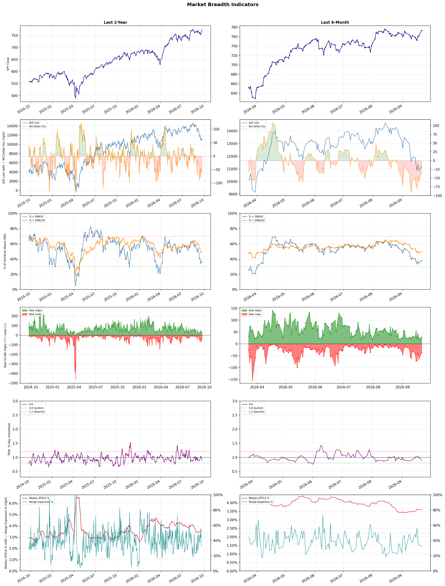

A daily market breadth and sector rotation report for active investors
| Item | Read |
|---|---|
| Regime | Defensive |
| Risk posture | Defensive |
| Universe | 1,322 stocks tracked · 28 new 52-week highs · 30 active swing setups |
| Breadth | only 38.1% of tracked stocks are above SMA50, new lows exceed new highs (36 vs 28), McClellan oscillator (breadth momentum) is negative at -31.2 |
| Leadership | Diagnostics & Research, Oil & Gas Refining & Marketing, and Health Information Services |
| Weakest groups | Chemicals, Resorts & Casinos, and Gambling |
Use this report to prioritize research and chart review; validate entries, stops, liquidity, earnings, and risk before acting.
| Item | Read |
|---|---|
| Primary read | Defensive regime with Defensive risk posture. |
| Research queue | TWST, WGS, NEO, RVTY, OPK |
| Leadership focus | Diagnostics & Research, Oil & Gas Refining & Marketing, and Health Information Services |
| Caution list | Chemicals, Resorts & Casinos, and Gambling |
| Review prompt | Check extension risk, chart location, fundamentals, valuation, and earnings before using any research row. |
| Item | Read |
|---|---|
| Primary read | 4 active risk warnings; use screen output as watchlist input only. |
| Bullish screens | NTRA, AMD, ARM, HIMX, STRC |
| Bearish screens | ZTS, YELP, WVE, FIS, CWH |
| Alerts / levels | Automated trigger, stop, ATR, liquidity, reward/risk, and event-risk levels are pending future enrichment. |
| Review prompt | Open the linked chart, define trigger and invalidation, then check liquidity and event risk independently. |
Risk Posture: Defensive — screen backdrop favors caution; require independent risk review before new exposure
Metric context: McClellan below -50 = elevated selling pressure; below -100 = washout territory. Range Expansion = share of stocks with daily range above their 20-day average. Signal Density = share of tracked names appearing in signal screens.
| Breadth Date | % > SMA50 | % > SMA200 | New Highs | New Lows | McClellan | Median Range | Avg Range | Median ATR14 | Range Expansion | Signal Density |
|---|---|---|---|---|---|---|---|---|---|---|
| 2026-09-21 | 38.1% | 49.4% | 28 | 36 | -31.2 | 2.7% | 3.2% | 3.6% | 32.6% | 2.5% |

Prior comparison date: September 18, 2026
| Metric | Prior | Current | Change |
|---|---|---|---|
| Regime | Defensive | Defensive | unchanged |
| Risk Posture | Defensive | Defensive | unchanged |
| % > SMA50 | 34.8% | 38.1% | +3.2 pts |
| % > SMA200 | 48.3% | 49.4% | +1.1 pts |
| New Highs | 21 | 28 | +7 |
| New Lows | 64 | 36 | +28 |
Top-10 industries entering: Banks - Diversified and Oil & Gas Midstream. Top-10 industries leaving: Insurance - Life and Oil & Gas Integrated. New multi-signal long setups: AMD, HIMX. New multi-signal short setups: CWH, NRG, TU, WVE, ZTS.
| Status | Tickers | Read |
|---|---|---|
| Added | AKAM, AMD, ANF, APPS, AU, BB, CWH, DOCN | New technical screen matches vs prior report. |
| Removed | AON, BROS, CMPS, FLO, GRAB, HALO, HTFL, MPC | No longer present in today's technical screen matches. |
| Still Active | ARM, COHU, FIS, KEEL, NEOG, NTRA, PEP, STRC | Appeared in both current and prior reports. |
| Promoted | none | Model Screen Score improved by at least 15 points. |
| Downgraded | none | Model Screen Score declined by at least 15 points. |
| Direction | Industry | ETF | Prior Rank | Current Rank | Days | Rank Change |
|---|---|---|---|---|---|---|
| Rose | Capital Markets | KCE | 75 | 8 | 42 | +67 |
| Rose | Semiconductors | SOXX | 77 | 11 | 42 | +66 |
| Rose | Electronic Components | XLK | 81 | 15 | 14 | +66 |
| Rose | Steel | SLX | 64 | 5 | 28 | +59 |
| Rose | Internet Content & Information | N/A | 71 | 21 | 35 | +50 |
Bull: The Capital Markets sector, represented by the SPDR S&P Capital Markets ETF (KCE), is experiencing rising relative strength due to a favorable macroeconomic environment and investor sentiment. As highlighted in the J.P. Morgan Private Bank report on sectors primed for growth, capital markets are benefiting from increased trading volumes and higher demand for financial services, which are bolstered by a midterm mindset that encourages investment in equities. Additionally, the positive outlook for stocks, as suggested by the Nasdaq stock outlook, further supports the bullish sentiment in this sector, making it an attractive option for investors seeking growth opportunities.
Bear: While the bull thesis highlights rising relative strength and favorable macroeconomic conditions, it overlooks several critical headwinds facing the Capital Markets sector. Increased trading volumes may be temporary and driven by short-term market volatility rather than sustainable growth, and the bearish sentiment emerging from the Nasdaq outlook suggests that broader market uncertainties could dampen investor enthusiasm. Additionally, the call from industry leaders for a slowdown in AI development signals potential disruptions that could negatively impact financial services and trading dynamics, undermining the optimistic projections for the sector.
Verdict: The Capital Markets sector is likely experiencing a rise in relative strength due to increased trading volumes and heightened demand for financial services, driven by a favorable macroeconomic environment and positive investor sentiment. However, a key risk to this bullish outlook is the potential for temporary trading spikes influenced by short-term volatility, coupled with broader market uncertainties and industry calls for a slowdown in AI development, which could disrupt financial services and dampen growth prospects. Investors should remain cautious and monitor these developments closely to assess the sustainability of the sector's growth.
Sources: Yahoo Finance, Google News
Bull: The recent surge in semiconductor stocks, highlighted by AMD's record highs and Qualcomm's 7% jump, is primarily driven by a robust demand for AI and computing technologies, as evidenced by Meta's renewed interest in CPU demand and the positive market reactions to AI interconnect demonstrations. Additionally, the anticipated price increases for chips, as reported for AMD, signal strong pricing power within the industry, further bolstering investor confidence and contributing to the rising relative strength of the semiconductor sector against other industries.
Bear: While the recent surge in semiconductor stocks may appear promising, it is essential to consider the broader economic context and potential headwinds. The semiconductor industry remains highly cyclical and sensitive to macroeconomic factors, including rising interest rates and potential recession risks, which could dampen demand for consumer electronics and enterprise spending. Furthermore, the sharp selloff in the Direxion Semiconductor Bull ETF suggests that investor sentiment may be overly optimistic, and any corrections could lead to significant declines in stock prices across the sector.
Verdict: The semiconductor industry's recent surge is fundamentally driven by heightened demand for AI and computing technologies, with companies like AMD and Qualcomm benefiting from strong pricing power and renewed interest in CPUs. However, investors should remain cautious of potential macroeconomic headwinds, such as rising interest rates and recession risks, which could negatively impact consumer and enterprise spending on electronics, leading to corrections in stock prices.
Sources: Yahoo Finance, Google News
Bull: The Electronic Components sector is experiencing rising relative strength due to a broader resurgence in tech stocks, as indicated by multiple headlines highlighting gains in major tech companies like Meta and Alphabet, which are driving investor sentiment. Additionally, the positive earnings outlook for companies within the sector, as reflected in the articles discussing Q2 earnings and the favorable Zacks Industry Outlook, suggests robust demand and growth potential, further bolstering investor confidence in electronic components as a key driver of technological advancement.
Bear: While the recent gains in tech stocks and positive earnings outlooks may seem encouraging, the electronic components sector is facing significant headwinds that could undermine this optimism. Supply chain disruptions, rising material costs, and potential regulatory challenges could dampen profitability and growth prospects for companies in this space. Furthermore, the overall economic uncertainty and potential for a slowdown in consumer spending may lead to decreased demand for electronic components, making the current bullish sentiment potentially overblown.
Verdict: The electronic components sector is experiencing rising relative strength primarily due to a resurgence in tech stocks, driven by strong earnings from major players like Meta and Alphabet, which enhances investor sentiment and indicates robust demand. However, key risks remain, including supply chain disruptions, rising material costs, and economic uncertainty that could dampen consumer spending and ultimately impact demand for electronic components. Investors should monitor these potential headwinds closely while considering positions in the sector.
Sources: Yahoo Finance, Google News
Bull: The rising relative strength of the steel industry, particularly highlighted by the VanEck Steel ETF (SLX) and its recent 52-week high, can be attributed to increasing demand driven by AI-related infrastructure projects and broader economic recovery. The headlines indicate a growing appetite for steel, as evidenced by the performance of major players like Nucor and Steel Dynamics, despite some individual stock volatility, suggesting that overall industry fundamentals remain strong and poised for further growth. Additionally, the emphasis on steel producers to watch amid industry challenges indicates a resilient sector adapting to market dynamics, reinforcing a bullish outlook.
Bear: While the rising relative strength of the steel industry and the recent 52-week high of the VanEck Steel ETF (SLX) may suggest optimism, the underlying fundamentals reveal significant headwinds that could undermine this bullish narrative. The steel sector is facing increasing costs due to inflationary pressures, supply chain disruptions, and potential regulatory changes aimed at reducing carbon emissions, which could squeeze margins and hinder profitability. Additionally, the reliance on AI-related infrastructure projects may be overstated, as such initiatives often face delays and uncertainties, making the current valuation of steel stocks potentially overinflated and susceptible to a market correction.
Verdict: The steel industry's recent rise, particularly reflected in the VanEck Steel ETF (SLX) hitting a 52-week high, is primarily driven by increasing demand from AI-related infrastructure projects and a broader economic recovery, which suggests strong fundamentals. However, investors should remain cautious of significant risks, including rising costs from inflation, supply chain disruptions, and potential regulatory hurdles that could impact profitability and lead to a market correction.
Sources: Yahoo Finance, Google News
Bull: The Internet Content & Information industry is experiencing rising relative strength primarily due to its robust growth potential driven by advancements in artificial intelligence and communication technologies, as highlighted by headlines from Morningstar and The Motley Fool. Additionally, the emphasis on competitive advantages among leading internet stocks, as noted by The Globe and Mail, suggests that companies in this sector are well-positioned to capitalize on increasing demand for digital content and innovative solutions, further enhancing their earnings growth prospects. This combination of technological innovation and favorable market sentiment is likely fueling investor interest and driving the industry's upward momentum.
Bear: While the bull thesis highlights growth potential driven by AI and communication technologies, it overlooks the significant headwinds facing the Internet Content & Information industry, including increasing regulatory scrutiny, rising competition, and potential market saturation. Additionally, the reliance on advertising revenue, which can be volatile and sensitive to economic downturns, poses a risk to earnings stability. As companies scramble to maintain competitive advantages, the cost of innovation and customer acquisition may erode profit margins, undermining the optimistic growth narrative.
Verdict: The Internet Content & Information industry's rising relative strength is fundamentally driven by advancements in artificial intelligence and communication technologies, which are enhancing growth prospects and attracting investor interest. However, key risks include increasing regulatory scrutiny and competition, as well as reliance on volatile advertising revenue, which could undermine earnings stability and profit margins. Investors should monitor these risks closely while considering opportunities in companies that demonstrate strong competitive advantages and innovative capabilities.
Sources: Google News
| Direction | Industry | ETF | Prior Rank | Current Rank | Days | Rank Change |
|---|---|---|---|---|---|---|
| Fell | Travel Services | N/A | 10 | 75 | 42 | -65 |
| Fell | Packaging & Containers | N/A | 21 | 82 | 42 | -61 |
| Fell | Restaurants | N/A | 25 | 81 | 28 | -56 |
| Fell | Uranium | URA | 21 | 71 | 14 | -50 |
| Fell | Industrial Distribution | N/A | 20 | 66 | 42 | -46 |
Bear: While the bull analyst highlights potential future investment opportunities, the current decline in relative strength suggests that the travel services sector is grappling with significant headwinds, including rising inflation, increasing interest rates, and potential recession fears that could dampen consumer spending on discretionary travel. Furthermore, the emphasis on "undervalued stocks" may indicate that the market is pricing in a prolonged downturn rather than a temporary correction, as investors remain wary of the sector's ability to recover amid these macroeconomic challenges. The introduction of innovative solutions like Webuy's AI travel card may not be sufficient to offset the broader economic pressures that are likely to persist in the near term.
Bull: The Travel Services sector is experiencing a decline in relative strength primarily due to a combination of macroeconomic pressures and shifting consumer behavior, as highlighted by recent headlines. The mention of "investment opportunities for 2026" suggests that investors may be cautious, anticipating a slowdown or correction in the sector before a potential rebound, while the focus on "undervalued stocks" indicates a market sentiment that may be undervaluing current travel stocks amid economic uncertainty. Additionally, the introduction of innovative solutions like Webuy's AI travel card reflects a need for the industry to adapt to evolving consumer expectations, which may be causing short-term volatility as companies pivot to meet these demands.
Verdict: The travel services sector is currently experiencing a decline due to macroeconomic pressures such as rising inflation and interest rates, which are dampening consumer spending on discretionary travel. While innovative solutions like Webuy's AI travel card may offer some potential for recovery, the key risk remains that prolonged economic challenges could hinder the sector's ability to rebound, leading investors to remain cautious in the short term. Therefore, investors should closely monitor economic indicators and consumer sentiment before making significant commitments in this space.
Sources: Google News
Bear: While the bull analyst points to geopolitical tensions as the primary driver of the Packaging & Containers industry's decline, it is crucial to recognize that these challenges are exacerbated by fundamental issues within the sector, such as rising raw material costs, increasing competition from sustainable alternatives, and a shift in consumer preferences towards eco-friendly packaging. Furthermore, the headlines suggest a lack of significant recovery or innovation within the industry, indicating that any temporary gains may not be sustainable, and investor confidence is unlikely to improve without substantial structural changes.
Bull: The Packaging & Containers industry is experiencing a decline in relative strength primarily due to the adverse impacts of geopolitical tensions, particularly the Iran war, which has disrupted supply chains and increased operational costs, as highlighted by Morningstar. Additionally, the industry's recent struggles are reflected in the headlines, indicating that while some stocks are poised to weather these challenges, overall sentiment remains cautious, leading to volatility and a lack of investor confidence in the sector.
Verdict: The Packaging & Containers industry is facing a decline primarily due to a combination of geopolitical tensions disrupting supply chains and fundamental issues such as rising raw material costs and increasing competition from sustainable alternatives. The key risk from the bear case is that without significant structural changes and innovation, the industry's challenges may persist, leading to continued investor skepticism and volatility. To navigate this environment, stakeholders should focus on enhancing operational efficiencies and exploring sustainable packaging solutions to align with shifting consumer preferences.
Sources: Google News
Bear: While the bull analyst attributes the decline in the restaurant sector to broader market concerns, it is crucial to recognize that the industry's fundamental challenges are more pronounced. Rising labor and food costs, coupled with shifting consumer preferences towards healthier and more sustainable options, are eroding profit margins and driving away price-sensitive customers. Furthermore, the recent selloff, exemplified by CAVA Group's significant drop, signals deeper issues within the sector that could indicate a prolonged downturn rather than a temporary market reaction.
Bull: The recent decline in the relative strength of the restaurant industry can be attributed to broader market concerns and sector-specific headwinds, as highlighted by the headlines. The selloff, as noted in the Seeking Alpha article, suggests that investors are wary of potential valuation traps amidst rising costs and changing consumer behaviors, which have led to a cautious outlook on restaurant stocks. Additionally, the sector-wide selling indicated by CAVA Group's drop reflects a broader trend of market volatility impacting investor sentiment, despite the potential for value creation in the long term.
Verdict: The restaurant industry's decline is primarily driven by rising labor and food costs, which are squeezing profit margins and pushing price-sensitive customers towards healthier, more affordable dining options. This fundamental shift, combined with broader market volatility, poses a significant risk of a prolonged downturn if operators cannot adapt to changing consumer preferences and manage operational costs effectively. Investors should closely monitor these trends and consider the potential for further declines if the sector fails to address its underlying challenges.
Sources: Google News
Bear: While the bull analyst attributes the sector's recent decline to profit-taking and market differentiation, the underlying fundamentals of the uranium industry remain concerning. The volatility highlighted in the headlines suggests deeper issues, such as the financial instability of key players like NuScale Power and Oklo, which raises questions about the long-term viability of these companies and the sector as a whole. Additionally, the increasing scrutiny from analysts and the potential for further downgrades indicate a lack of confidence that could exacerbate selling pressure, making the bearish case for uranium stocks more compelling.
Bull: The recent decline in the relative strength of the uranium sector can be attributed to a combination of profit-taking after a rally and concerns over the financial health of key players in the industry. Headlines indicate volatility and mixed performance among nuclear stocks, with significant drops for companies like NuScale Power and Oklo, driven by negative analyst ratings and cash burn issues, which have likely led to investor caution and a sector-wide correction as the market differentiates between profitable producers and loss-making developers. This uncertainty is compounded by broader market trends affecting risk appetite, particularly in the wake of selloffs and profit-taking following recent rallies.
Verdict: The recent decline in the uranium sector is primarily driven by profit-taking after a rally, coupled with growing concerns over the financial health of key players like NuScale Power and Oklo, which has led to increased volatility and mixed performance among nuclear stocks. The key risk from the bear case is the potential for further downgrades and a lack of investor confidence, which could exacerbate selling pressure and undermine the long-term viability of the sector. Investors should closely monitor financial stability and analyst sentiment to navigate this uncertainty effectively.
Sources: Yahoo Finance, Google News
Bear: While the bull analyst attributes the decline in relative strength to mixed earnings and shifting investor interest, it's critical to recognize that the broader economic environment is presenting significant headwinds for the industrial distribution sector. Rising interest rates, inflationary pressures, and potential supply chain disruptions could exacerbate profitability concerns, leading to a sustained downturn in performance. Furthermore, the high short interest in stocks like QXO may not just reflect bearish sentiment but could indicate a broader lack of confidence in the sector's ability to rebound amidst these macroeconomic challenges.
Bull: The recent decline in the relative strength of the Industrial Distribution sector can be attributed to a combination of factors, including mixed Q2 earnings reports from key players like Core & Main and Herc, which may have raised concerns about overall sector performance and profitability. Additionally, the focus on supply chain stocks for 2026, as highlighted by The Motley Fool, suggests a shift in investor interest towards more promising growth areas, potentially diverting capital away from traditional industrial distributors. This, coupled with high short interest in stocks like QXO, indicates bearish sentiment that could be weighing on the sector's performance.
Verdict: The recent decline in the Industrial Distribution sector is primarily driven by mixed earnings reports and a shift in investor focus towards more promising growth areas, which has resulted in bearish sentiment and high short interest in stocks like QXO. However, the key risk lies in the broader economic challenges, including rising interest rates and inflationary pressures, which could further dampen profitability and hinder any potential rebound in the sector. Investors should closely monitor macroeconomic indicators and earnings trends to gauge the sector's recovery potential before making significant investments.
Sources: Google News
| Industry | Rank | ETF | 7d | 14d | 28d | 42d | Chg 42d | Size | 20D | 60D | Composite | Active Setups |
|---|---|---|---|---|---|---|---|---|---|---|---|---|
| Diagnostics & Research | 1 | N/A | 2 | 2 | 1 | 1 | 0 | 16 | 5.9% | 30.7% | 0.945 | 0 |
| Oil & Gas Refining & Marketing | 2 | CRAK | 1 | 1 | 3 | 5 | +3 | 7 | 9.6% | 51.1% | 0.935 | 0 |
| Health Information Services | 3 | N/A | 4 | 4 | 2 | 2 | -1 | 12 | 8.1% | 41.4% | 0.919 | 0 |
| Software - Infrastructure | 4 | IGV | 13 | 20 | 13 | 6 | +2 | 62 | 3.8% | 22.6% | 0.848 | 1 |
| Steel | 5 | SLX | 10 | 6 | 64 | 24 | +19 | 5 | 8.4% | 14.3% | 0.844 | 0 |
| Computer Hardware | 6 | XLK | 39 | 23 | 29 | 15 | +9 | 15 | 3.0% | 8.2% | 0.806 | 1 |
| Medical Care Facilities | 7 | IHF | 8 | 19 | 12 | 9 | +2 | 9 | 0.3% | 14.6% | 0.794 | 0 |
| Capital Markets | 8 | KCE | 14 | 9 | 33 | 75 | +67 | 31 | 5.5% | 12.0% | 0.779 | 0 |
| Banks - Diversified | 9 | N/A | 19 | 11 | 26 | 12 | +3 | 16 | 1.3% | 6.7% | 0.757 | 0 |
| Oil & Gas Midstream | 10 | AMLP | 9 | 10 | 20 | 45 | +35 | 22 | 1.8% | 10.0% | 0.712 | 0 |
Rank columns (7d–42d) show the industry's rank that many trading days ago — lower is stronger. Chg 42d = rank change vs 42 trading days ago — positive means the industry moved up. 20D and 60D are the mean stock return within the industry over that period. Active Setups: count of today's swing-trade candidates from this industry appearing across all signal screens.
| Industry | Rank | ETF | 7d | 14d | 28d | 42d | Chg 42d | Size | 20D | 60D | Composite | Active Setups |
|---|---|---|---|---|---|---|---|---|---|---|---|---|
| Chemicals | 87 | N/A | 84 | 82 | 86 | 88 | +1 | 8 | -12.6% | -22.0% | 0.036 | 0 |
| Resorts & Casinos | 86 | N/A | 75 | 85 | 78 | 56 | -30 | 6 | -11.8% | -13.5% | 0.085 | 0 |
| Gambling | 85 | N/A | 46 | 43 | 49 | 83 | -2 | 5 | -13.8% | -10.6% | 0.092 | 0 |
| Leisure | 84 | N/A | 68 | 69 | 67 | 50 | -34 | 9 | -11.2% | -13.7% | 0.126 | 0 |
| Building Products & Equipment | 83 | XHB | 82 | 79 | 76 | 58 | -25 | 8 | -8.7% | -17.4% | 0.144 | 0 |
| Packaging & Containers | 82 | N/A | 59 | 46 | 47 | 21 | -61 | 7 | -13.1% | -8.6% | 0.148 | 0 |
| Restaurants | 81 | N/A | 52 | 48 | 25 | 72 | -9 | 16 | -15.1% | -11.4% | 0.155 | 1 |
| REIT - Diversified | 80 | N/A | 56 | 75 | 71 | 80 | 0 | 5 | -8.0% | -8.6% | 0.157 | 0 |
| Footwear & Accessories | 79 | N/A | 87 | 88 | 85 | 67 | -12 | 5 | -8.5% | -16.7% | 0.158 | 0 |
| REIT - Retail | 78 | N/A | 61 | 76 | 72 | 74 | -4 | 11 | -7.0% | -10.1% | 0.186 | 0 |
Rank columns (7d–42d) show the industry's rank that many trading days ago — lower is stronger. Chg 42d = rank change vs 42 trading days ago — positive means the industry moved up. 20D and 60D are the mean stock return within the industry over that period. Active Setups: count of today's swing-trade candidates from this industry appearing across all signal screens.
These are research candidates from top-ranked stocks, capped at five names per industry to avoid over-concentration. Returns shown (60D, 120D, 250D) are historical — they reflect where prices have already moved, not forward expectations. Extension Risk flags names that may require extra patience or a better entry point. They are not buy signals.
Chart: TV = TradingView chart (opens in browser); PDF = local chart file (if downloaded).
| Ticker | Name | Industry | Industry Rank | Market Cap | 60D Hist | 120D Hist | 250D Hist | Extension Risk | Research Reason | Chart |
|---|---|---|---|---|---|---|---|---|---|---|
| TWST | Twist Bioscience | Diagnostics & Research | 1 | N/A | 71.6% | 283.3% | 496.3% | Extended | Top-ranked in industry; extended | TV |
| WGS | GeneDx Holdings | Diagnostics & Research | 1 | N/A | 42.5% | 64.1% | -24.6% | Constructive | Top-ranked in industry | TV |
| NEO | NeoGenomics | Diagnostics & Research | 1 | N/A | 41.4% | 169.6% | 131.1% | Extended | Top-ranked in industry; extended | TV |
| RVTY | Revvity | Diagnostics & Research | 1 | N/A | 26.6% | 69.6% | 66.9% | Constructive | Top-ranked in industry | TV |
| OPK | Opko Health | Diagnostics & Research | 1 | N/A | 11.9% | 53.6% | 17.4% | Constructive | Top-ranked in industry | TV |
| DINO | HF Sinclair | Oil & Gas Refining & Marketing | 2 | N/A | 62.2% | 75.6% | 115.3% | Extended | Top-ranked in industry; extended | TV |
| UGP | Ultrapar Participacoes | Oil & Gas Refining & Marketing | 2 | N/A | 61.0% | 46.5% | 101.7% | Extended | Top-ranked in industry; extended | TV |
| MPC | Marathon Petroleum | Oil & Gas Refining & Marketing | 2 | N/A | 59.1% | 65.2% | 118.5% | Extended | Top-ranked in industry; extended | TV |
| VLO | Valero Energy | Oil & Gas Refining & Marketing | 2 | N/A | 54.8% | 58.5% | 141.3% | Extended | Top-ranked in industry; extended | TV |
| CSAN | Cosan | Oil & Gas Refining & Marketing | 2 | N/A | -4.8% | -28.8% | -51.4% | Lagging | Top-ranked in industry; lagging | TV |
| TXG | 10x Genomics | Health Information Services | 3 | N/A | 121.4% | 299.3% | 506.6% | Very extended | Top-ranked in industry; very extended | TV |
| SDGR | Schrodinger | Health Information Services | 3 | N/A | 87.4% | 173.2% | 53.3% | Extended | Top-ranked in industry; extended | TV |
| TEM | Tempus AI | Health Information Services | 3 | N/A | 42.2% | 84.2% | -9.1% | Constructive | Top-ranked in industry | TV |
| DOCS | Doximity | Health Information Services | 3 | N/A | 35.2% | 13.1% | -63.0% | Constructive | Top-ranked in industry | TV |
| HNGE | Hinge Health | Health Information Services | 3 | N/A | 25.7% | 156.9% | 63.3% | Extended | Top-ranked in industry; extended | TV |
| NTSK | Netskope | Software - Infrastructure | 4 | N/A | 86.2% | 129.1% | -28.7% | Extended | Top-ranked in industry; extended | TV |
| BLSH | Bullish | Software - Infrastructure | 4 | N/A | 83.5% | 20.6% | -41.9% | Extended | Top-ranked in industry; extended | TV |
| OKTA | Okta | Software - Infrastructure | 4 | N/A | 60.4% | 153.5% | 107.1% | Extended | Top-ranked in industry; extended | TV |
| CRWD | CrowdStrike | Software - Infrastructure | 4 | N/A | 47.0% | 162.4% | 102.3% | Extended | Top-ranked in industry; extended | TV |
| DOCN | DigitalOcean | Software - Infrastructure | 4 | N/A | 0.6% | 86.6% | 287.6% | Constructive | Top-ranked in industry | TV |
These are technical screen matches from existing signal files. They are not trade recommendations. Trigger, stop, ATR, liquidity, reward/risk, and event risk still require separate validation until those inputs are available.
Model Screen Score is weighted by signal count, industry rank, freshness, and setup type. It is not a probability of profit, expected return, or suitability rating. Industry cap: max 3 candidates per industry.
Signal glossary: Momentum Pullback = stock in an uptrend that has pulled back 10–30% and shows re-entry conditions. MA Compression = short- and long-term moving averages converging, often preceding a directional move. Three-Day Up/Down = three consecutive closes in the same direction. New 52Wk High/Low = price reached a new annual extreme.
Chart: TV = TradingView chart (opens in browser); PDF = local chart file (if downloaded).
| Ticker | Industry | Setups | Close | Industry Rank | Signal Count | Model Screen Score | Reason | Chart |
|---|---|---|---|---|---|---|---|---|
| NTRA | Diagnostics & Research | New 52Wk High; Three-Day Up | 370.64 | 1 | 2 | 100 | Multi-signal; top industry breakout | TV |
| AMD | Semiconductors | New 52Wk High; Three-Day Up | 615.52 | 11 | 2 | 85 | Multi-signal; new-high strength | TV |
| ARM | Semiconductors | Momentum Pullback; Three-Day Up | 322.90 | 11 | 2 | 85 | Multi-signal; pullback setup | TV |
| HIMX | Semiconductors | Momentum Pullback; Three-Day Up | 14.61 | 11 | 2 | 85 | Multi-signal; pullback setup | TV |
| STRC | Software - Application | New 52Wk High; Three-Day Up | 98.78 | 16 | 2 | 77 | Multi-signal; new-high strength | TV |
| KEEL | Information Technology Services | Momentum Pullback; Three-Day Up | 4.07 | 28 | 2 | 70 | Multi-signal; pullback setup | TV |
| TH | Specialty Business Services | New 52Wk High; Three-Day Up | 21.28 | 34 | 2 | 70 | Multi-signal; new-high strength | TV |
| COHU | Semiconductor Equipment & Materials | Momentum Pullback; Three-Day Up | 60.62 | 36 | 2 | 70 | Multi-signal; pullback setup | TV |
| NEOG | Medical Devices | New 52Wk High; Three-Day Up | 13.61 | 44 | 2 | 65 | Multi-signal; new-high strength | TV |
| AKAM | Software - Infrastructure | Momentum Pullback | 117.41 | 4 | 1 | 58 | Single-signal; top industry pullback | TV |
| BB | Software - Infrastructure | Momentum Pullback | 8.53 | 4 | 1 | 58 | Single-signal; top industry pullback | TV |
| DOCN | Software - Infrastructure | Momentum Pullback | 146.16 | 4 | 1 | 58 | Single-signal; top industry pullback | TV |
| SMCI | Computer Hardware | Momentum Pullback | 41.20 | 6 | 1 | 58 | Single-signal; top industry pullback | TV |
| UMAC | Computer Hardware | Momentum Pullback | 24.25 | 6 | 1 | 58 | Single-signal; top industry pullback | TV |
| DXYZ | Asset Management | Momentum Pullback | 30.99 | 12 | 1 | 50 | Single-signal; pullback setup | TV |
| STX | Computer Hardware | Three-Day Up | 877.33 | 6 | 1 | 48 | Single-signal; top industry setup | TV |
| APPS | Software - Application | Momentum Pullback | 12.05 | 16 | 1 | 42 | Single-signal; pullback setup | TV |
| RUM | Internet Content & Information | Momentum Pullback | 9.17 | 21 | 1 | 42 | Single-signal; pullback setup | TV |
| ANF | Apparel Retail | Momentum Pullback | 136.76 | 22 | 1 | 42 | Single-signal; pullback setup | TV |
| AU | Gold | Momentum Pullback | 101.93 | 24 | 1 | 42 | Single-signal; pullback setup | TV |
| EGO | Gold | Momentum Pullback | 42.37 | 24 | 1 | 42 | Single-signal; pullback setup | TV |
Bearish setups — stocks making new lows or showing persistent downside patterns. Validate carefully before acting.
| Ticker | Industry | Setups | Close | Industry Rank | Signal Count | Model Screen Score | Reason | Chart |
|---|---|---|---|---|---|---|---|---|
| ZTS | Drug Manufacturers - Specialty & Generic | New 52Wk Low; Three-Day Down | 71.33 | 19 | 2 | 47 | Multi-signal; new-low weakness | TV |
| YELP | Internet Content & Information | New 52Wk Low; Three-Day Down | 19.41 | 21 | 2 | 47 | Multi-signal; new-low weakness | TV |
| WVE | Biotechnology | New 52Wk Low; Three-Day Down | 4.26 | 26 | 2 | 40 | Multi-signal; new-low weakness | TV |
| FIS | Information Technology Services | New 52Wk Low; Three-Day Down | 35.19 | 28 | 2 | 40 | Multi-signal; new-low weakness | TV |
| CWH | Auto & Truck Dealerships | New 52Wk Low; Three-Day Down | 5.48 | 39 | 2 | 40 | Multi-signal; new-low weakness | TV |
| VVV | Auto & Truck Dealerships | New 52Wk Low; Three-Day Down | 26.62 | 39 | 2 | 40 | Multi-signal; new-low weakness | TV |
| TU | Telecom Services | New 52Wk Low; Three-Day Down | 8.68 | 41 | 2 | 35 | Multi-signal; new-low weakness | TV |
| PEP | Beverages - Non-Alcoholic | New 52Wk Low; Three-Day Down | 129.59 | 58 | 2 | 35 | Multi-signal; new-low weakness | TV |
| NRG | Utilities - Independent Power Producers | New 52Wk Low; Three-Day Down | 103.28 | 60 | 2 | 35 | Multi-signal; new-low weakness | TV |
How To Use This Report
| Use | Purpose |
|---|---|
| Market map | Start with breadth, regime, risk warnings, and what changed since the prior report. |
| Industry scan | Use leading, deteriorating, rising, and declining industries to focus research. |
| Research queue | Treat long-term candidates as names for deeper fundamental, valuation, and chart review. |
| Technical review | Treat bullish and bearish screen matches as watchlist inputs that require independent trigger, stop, liquidity, and event-risk checks. |
| Source follow-up | Use chart links and source files to verify raw inputs before relying on any row. |
What This Report Is Not
| Not | Meaning |
|---|---|
| Investment advice | The report does not evaluate personal objectives, risk tolerance, tax situation, account type, or suitability. |
| Buy/sell recommendation | Named tickers are research candidates or screen matches, not recommendations to transact. |
| Price target | The report does not provide fair value estimates, targets, or expected returns. |
| Trade plan | Trigger, stop, sizing, reward/risk, liquidity, and event-risk review remain separate user work. |
| Performance claim | Model Screen Score is not validated historical performance or a forecast of future results. |
| Item | Note |
|---|---|
| Version | Daily Report Methodology v1 |
| Model Screen Score | Screen-fit rank based on signal count, industry rank, freshness, and setup type. |
| Not predictive proof | The score is not expected return, probability of profit, historical validation, or suitability analysis. |
| Industry ranks | Composite industry ranks use existing daily ranking outputs and historical rank columns when available. |
| Research candidates | Long-term rows are research candidates from ranked stocks and leading industries, with historical returns labeled as historical only. |
| Technical matches | Bullish and bearish rows are screen matches requiring independent chart, trigger, stop, liquidity, and event-risk review. |
| Source | Status | Rows | Path |
|---|---|---|---|
| Market breadth | present | 1253 | breadth_20260921.csv |
| Industry composite rankings | present | 87 | all_industry_composite_20260921.csv |
| Top ranked stocks | present | 195 | top_ranked_composite_20260921.csv |
| All ranked stocks | present | 1322 | all_stocks_composite_sorted_20260921.csv |
| Top momentum pullbacks | present | 1474 | top_momentum_pullbacks_20260921.csv |
| MA compression | present | 1474 | ma_compression_stocks_20260921.csv |
| Three-day up/down | present | 201 | three_day_up_down_stocks_20260921.csv |
| New 52-week members | present | 64 | breadth_new_52wk_members_20260921.csv |
This report is generated from automated technical screens and is for informational and research purposes only. It is not investment advice, a solicitation, or a recommendation to buy or sell any security. Past performance is not indicative of future results. You are solely responsible for your own investment decisions. Consult a licensed financial advisor before acting on any information herein.